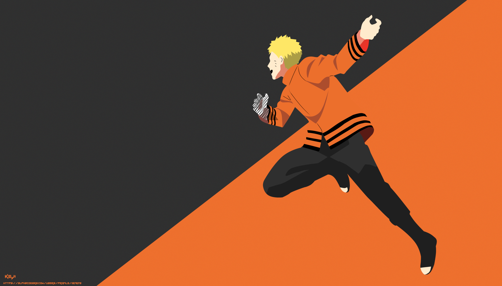
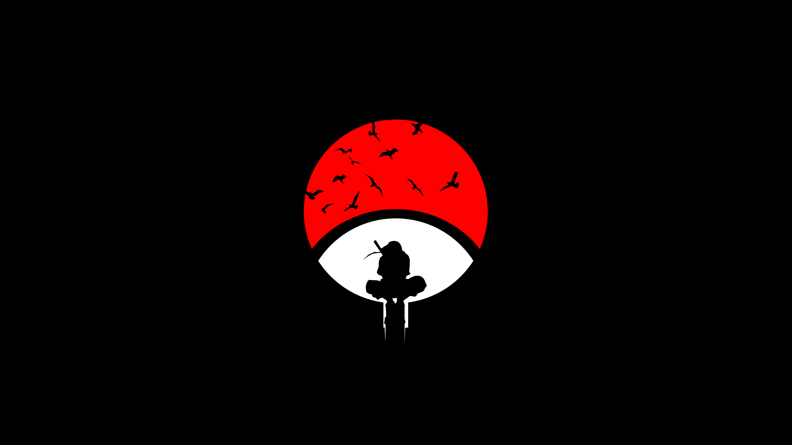
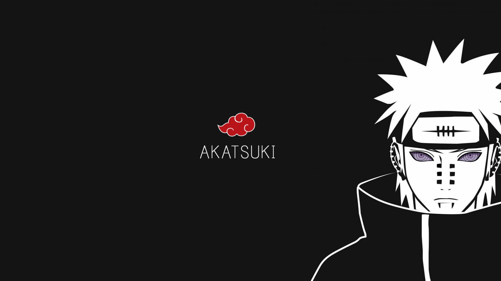
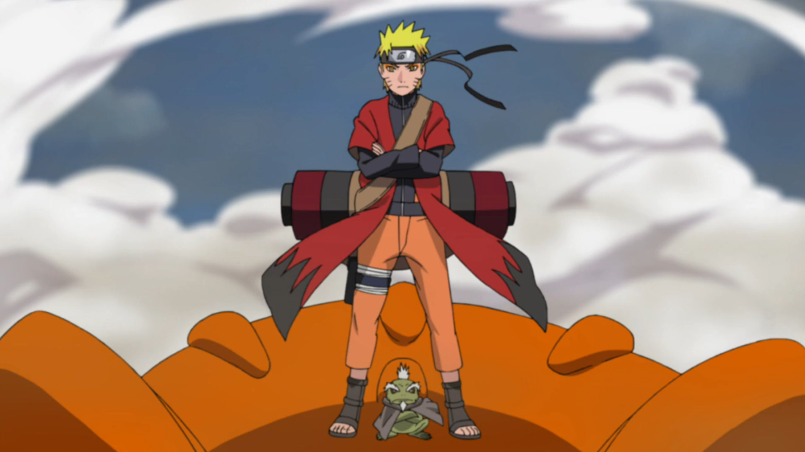
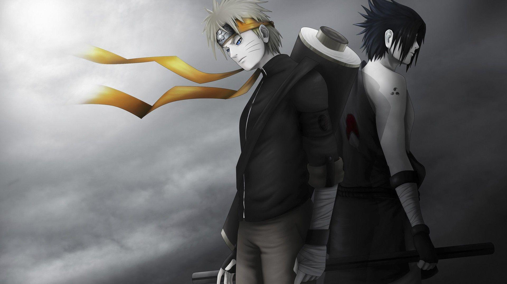

Naruto Uzumaki is the main protagonist in the popular manga and anime series Naruto. He is a cheerful, hyperactive, strong-willed, and occasionally simple-minded young shinobi from the village of Konoha (or Leaf Village).
Since Naruto has the Nine Tails Fox sealed inside him, he is able to use the Fox's chakra, which is much greater than the average human. Initially Naruto and the Fox hated each other, and would rarely grant Naruto his power unless they were going to die. Eventually, they become friends, and Naruto then refers to the fox by his name, Kurama. At this point, Naruto can use Kurama's chakra at will.

Kakashi Hatake is one of the higher level Ninjas in the hiddenleaf village. He is the teacher (sensei) of Uzumaki Naruto, Haruno Sakura and Uchiha Sasuke. His teacher was the fourth hokage, Minato Namikaze and his teammates were Obito Uchiha and Rin Nohara. His rival is Might Guy.
He's worked and thrived at all levels, including among the ANBU. He has a summoning ability with a pack of Ninja Dogs, one of which speaks and all of which are excellent trackers. He's never been shown without his masks on. He wears at least two of them, and even his close friends don't know what he looks like. Shortly after the ninja war, Kakashi becomes the Sixth Hokage of the Hidden Leaf Village, after heading Obito's advice.
Madara Uchiha (うちはマダラ, Uchiha Madara) was the legendary leader of the Uchiha clan. He founded Konohagakure alongside his childhood friend and rival, Hashirama Senju, with the intention of beginning an era of peace. When the two couldn't agree on how to achieve that peace, they fought for control of the village, a conflict which ended in Madara's death.
Madara, however, rewrote his death and went into hiding to work on his own plans. Unable to complete it in his natural life, he entrusted his knowledge and plans to Obito shortly before his actual death. Years later, Madara would be revived, only to see his plans foiled and ultimately, and finally, realising the error of his ways and making amends with Hashirama before his final death.
Hashirama Senju (千手柱間, Senju Hashirama) was a member of the famed Senju clan. He himself was hailed as the "God of Shinobi" for his unmatched ninja prowess. Hashirama sought peace for the shinobi world, and to that end founded Konohagakure with his clan, his childhood friend and rival: Madara Uchiha and the Uchiha clan.
He would later become the First Hokage (初代火影, Shodai Hokage, literally meaning: First or Founding Fire Shadow) of Konohagakure. Although he was not able to achieve peace during his lifetime, his legacy and vision for the world would continue to shape the village and the entire shinobi world even after his death.

Itachi Uchiha (うちはイタチ, Uchiha Itachi) was a shinobi of Konohagakure's Uchiha clan who served as an Anbu Captain. He later became an international criminal after murdering his entire clan, sparing only his younger brother, Sasuke. He afterwards joined the international criminal organisation known as Akatsuki, whose activity brought him into frequent conflict with Konoha and its ninja — including Sasuke who sought to avenge their clan by killing Itachi.
Following his death, Itachi's motives were revealed to be more complicated than they seemed and that his actions were only ever in the interest of his brother and village, making him remain a loyal shinobi of Konohagakure to the very end.